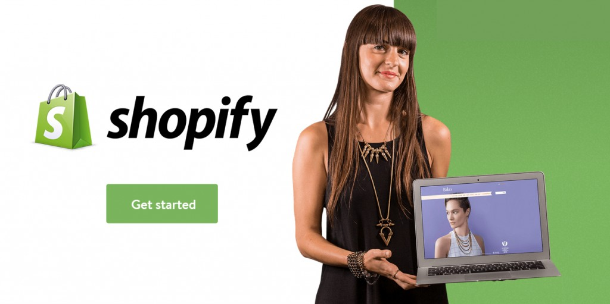

The Essential Pre-Launch Checklist for Shopify Store Owners

An essential guide to launching your Shopify Store
Opening an eCommerce store is easy with the 14 day free trial offered by Shopify. They give you this grace period to get your shop ready for the world. With just a bit of hustle and drive, these 14 days is more than enough for you to get going. In fact, the most successful stores I’ve worked with have launched before the 14 day trial period was over.
I always suggest using this 14 days as a hard deadline for getting the shop launch-ready. Building out your store idea, along with a compelling product offer and story is a daunting task, but it’s really just the first steps in your eCommerce adventure. If you can break it down into smaller tasks – it makes it feel achievable.
Most shops start as a solo endeavour, where the entrepreneur wears multiple hats to get things done. From my experience, most stores don’t make it past the 14 day trial because this task juggling can be too overwhelming. It’s that hard to get an eCommerce business going. Despite Shopify making huge strides to lower the barrier to entry, any shop owner with moderate levels of success will tell you it’s a hard road to your first sale, and an even stormier road to profitability.
At OHIO, we try to make this path a little easier with our VIP Shopify Taskdesk. Another essential piece to launching, getting that first sale and reaching profitability with a small team is learning how to prioritize, break things down and get *hit done.
We’ve put together a short list on how to make it through the free trial to a launch ready shop. You should think of this first version as a work in progress but good enough to launch.
If it’s 80% ready, it’s ready
If you’re a little embarrassed at launch, you’re on the right path.
Here is our definitive list of things to get your store ready for launch day:
1. Choose a theme design that you can envision using for at least your first year of business and configure the theme to meet your store launch needs
Selecting the right theme in the Shopify theme store requires a bit of vision. There is nothing better to feed this vision then to have mentor stores, a small collection of stores that you’ve spotted and that are doing well. These mentor stores can serve as your vision springboard for your own store. With your vision, select a theme that you will stick with for your first year. You don’t want to be changing your design in your first year.
It’s a waste of your time and often people with the perfectionist gene fall into this trap. They make themselves believe that changing the theme is productive. It’s not. So, make sure your theme design matches your vision and stick with it, barring major setbacks, for your first year of business at the very least.
2. Load your first products and learn the Shopify product listing features.
I recommend new stores to have 1 to 10 products to be launch ready. This can vary of course. What’s more important is that these first products are uploaded with attention. This process also serves as training to conquer the Shopify platform and all it’s product related features.
Here are a few things to remember: make sure your images are good quality and optimized for fast loading, that your retail pricing is intelligent, that your product descriptions are clear and that you fully understand how Shopify uses categories, which they call ‘’Collections’’ . A really good understanding of this and other features is important.
Also, a well published product page that you can duplicate will allow you to add products faster and more intelligently when/if you grow your shop with more products.
Connect your payment gateway
If you can’t accept the monies, you can’t make the sales. This is crucial piece of your pre-launch. With Paypal and Shopify payments, you have more than enough options to cover this item on your checklist.
Paypal simply requires you to plug in your Paypal account details in the Shopify dashboard . To use Shopify payments, you simply need to activate it and connect a bank account in the payments section of your Shopify account.
4. Configure your shipping rates
Once you have your products loaded, putting some thought into your shipping rates will save you a lot of hassle. Every shop I’ve opened has had unprofitable surprises with the first few orders because I didn’t put thought into the shipping rates. I always suggest starting with flat rate shipping.
If you decide to only ship within the US, get your most expensive shipping cost and your cheapest, and put the median or highest price as the flat rate. Sometimes you will gain a bit, sometimes you will lose with the median price, but it’s fair. With a few orders you can start breaking down the shipping rates per destination.
Also, set a flat rate for international shipping if you ship outside of your country. Setting perfect shipping rates takes a lot of thought and calculations, but this can be optimized over time. Get your store launch-ready with flat rate shipping then work to improve this after your first orders.
5. Write content for the 6 basic static pages
The standard static pages that you should launch with are the following. About, Contact, FAQ, Shipping Details, Return Policy, Terms of Service and Privacy pages. If you sell anything with size variations, having a size chart page would also be considered essential. All this can be a bit of work but it doesn’t have to take too much time. Use your mentor stores to lead your vision.
Don’t copy but I advocate building on other people’s ideas and improving on them. So do that. They have probably put a lot of effort into these pages. Your About page might be your most important page and hiring a pro copywriter for this is a great investment in my opinion, but not necessary. You can read about one company that specializes in this at undullify.me.
Don’t let your About Page suck.
A few hundred words describing your story and the unique selling proposition are things to consider on your about page. For your FAQ page, you can start with 5-10 expected questions.
Write out your shipping and return policies and be very mindful of these as potentially high friction points for new customers. I always offer a no fuss return policy and assume that most people won’t take advantage of softer policies. Your contact page should have an email form, phone number, address and social account links.
You can use basic templates available online for your Privacy and Terms pages but read through them so you can properly edit where it’s needed.
6. Keyword research for your SEO meta data
If you want to have any hope of ranking for your target keywords on Google, you can’t skip this one. Understanding what people are searching for is a key element to getting momentum on search and actually, I recommend doing this even before deciding to enter an industry.
I won’t go over how to do keyword research but select a tool that works, we use Keyword Researcher (by far the best keyword tool I’ve used, for a $50 one time price, it can’t be beat),
Find what has volume, the words people are using and list down the keywords along with their search volumes. Once you’ve done that for a set of 50-100 search terms, decide on a consistent structure for your SEO Title tags and descriptions. I like to add intentional keywords like ‘’buy’’ or ‘’get’’ within the title tags as well as our 1-800 number.
This helps improve click through rates and conversion rates overall. Overall, be very consistent with the words you use to describe your products and how you structure your meta data.
7. Install Google Analytics enhanced eCommerce
To grow your store and to make better decisions, you will need to collect and analyze data. Setting up Google Analytics is not only one of the most important things to do, it may also be one of the easiest things to get done on this checklist.
Simply create an account here and grab the tracking code then drop in the right spot within the settings of your Shopify dashboard. At the same time, activate the enhanced eCommerce features for better eCommerce data tracking. To get templated Analytics dashboard for eCommerce check out the Analytics Gallery.
8. Install Google Webmaster Tools and connect to Google Analytics
While Google Analytics will help you track data, Webmaster Tools helps you track the overall Google friendliness (health) of your website. Google WMT is a good way to understand the technical aspects to running a healthy and well structured eCommerce store. I suggest taking time to understanding how this tool works. Through internal alerts you can stay fully aware of minor structural problems.
The OHIO helpdesk is well equipped to take on small tasks related to alerts coming from webmaster tools. An easy way to install and verify is to open the Webmaster tools account from the same account you activated the Google Analytics from. It’s a speedy process
9. Install only the necessary, crucial Shopify apps
Eliminate the non-essential
There are so many apps available in the Shopify store that can promise and add functionality to your store but the truth, you need to focus. If you need help sifting through, WeMakeWebsites put together a nice short list here. Every new app you decide to add to your shop may add cost but more importantly, will add non-essential work and distract you from your goal, which is to launch and get your first sales. Don’t be swayed by the promises of apps.
There is no easy button.
Each app comes with it’s own set of instructions to integrate, deploy and get full value from. I suggest to focus on a select few apps that you think will be critical in helping you get your first sales within the first month of your store launch. Browse the app store and make these decisions wisely. If you have more than 5 apps at launch, it’s probably too much. Stay lean so you can move fast and be efficient.
My rule of thumb for picking apps – if it’s not line with my goal to sell more and it’s not a ‘’heck yea, we need this’’ then it’s a ‘’no, not right now’’.
10. Devise a launch plan, even if small.
Ok, this is a bit trickier and requires more work than any of the other checklist elements. At the very least, a basic launch plan can consist of cold emailing 5-10 relevant online publications telling them about your project, announcing your launch on your personal Facebook page and to anyone around you that you think may be interested.
Do not make the mistake of thinking people will just show up. Some ways of launching can be very calculated like planning to publish guests posts on several blogs on the same day, to a very simple announcement to your immediate circle. Focus your launch around your website and a single social media profile.
You should spend as much time interacting and engaging with people on that platform in the pre-launch phase. If you’re not willing to do this work, this early, you’re just not fit to run a shop. There is no easy button here, so don’t look for it and don’t wait for it. Talk to people before, during and after your launch through any relevant online and offline medium.
If you have limiting beliefs or you are embarrassed about your venture, find ways to conquer this. If you’re not ready to put your name behind your project – there is a problem. It might also be a sign that you don’t have the fire in your belly to be a business owner. Self-awareness is a big part of the entrepreneurial journey so make sure you consider carefully the road your taking. It’s a pillar to entrepreneurial success.
In summary, here are the points again:
- Choose a theme design that you can envision using for at least your first year of business and configure the theme to meet your store launch needs
- Load your first products and learn the Shopify product listing features.
- Connect your payment gateway
- Configure your shipping rates
- Write content for the 6 basic static pages
- Keyword research for your SEO meta data
- Setup Google Analytics enhanced eCommerce
- Setup Google Webmaster Tools and connect to Google Analytics
- Install only the necessary, crucial Shopify apps
- Devise a launch plan, even if small.
This is our checklist of most important things to get your store launch ready – and remember that the 14 days is a hard deadline so take it seriously.
If you need guidance on any one of these checklist elements, add a comment below or get in touch with us directly.
Take a look at our Shopify Task Desk that can help you get small development and design tasks done for your store.
Did we miss anything? Please share your essential pre-launch To Do’s in the comments.